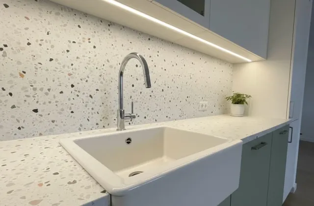

Pose de carrelage
et de faïence
Carrelage de sol, faïence murale, mosaïque et grands formats : un alignement précis et des joints soignés, sur un support préparé pour durer.


Carrelage de sol, faïence murale, mosaïque et grands formats : un alignement précis et des joints soignés, sur un support préparé pour durer.
Un carrelage se juge d'abord à ses alignements et à ses joints, mais sa tenue dans le temps dépend du support. Un sol qui n'est pas plan, une chape trop humide ou une colle mal adaptée entraînent des carreaux creux, des fissures et des joints qui se détachent. C'est pourquoi nous contrôlons la planéité et la nature du support avant d'ouvrir le premier carton.
Nous posons du carrelage de sol et mural, de la faïence, de la mosaïque et des grands formats, en intérieur comme en extérieur couvert. Nous soignons les coupes, les angles et les raccords avec les plinthes et les menuiseries, ce qui fait souvent la différence entre une pose correcte et une pose irréprochable.
Le carrelage est le plus souvent posé dans le cadre d'une salle de bain ou d'une cuisine. Pour une surface continue sans joint, le béton ciré peut le remplacer sur les murs comme au sol.
Pose collée sur support préparé, avec le calepinage défini avant le début pour éviter les coupes disgracieuses en bord de pièce.
Dans les zones humides, l'étanchéité sous le revêtement est aussi importante que la faïence elle-même. Elle est posée avant le carrelage.
Les grands carreaux et les dalles minces demandent un support très plan et un encollage adapté. Ils réduisent le nombre de joints et simplifient l'entretien.
Mosaïque, frises et motifs décoratifs apportent du caractère. Les joints et les profilés de finition sont choisis pour s'accorder au revêtement.
Le carrelage est posé en dernier sur un support préparé : chaque couche attend le séchage de la précédente.
Nous vérifions la planéité du sol, la solidité de la chape, l'humidité et l'état des murs. Ce contrôle décide si un ragréage ou un primaire est nécessaire.
Le devis précise le format, la quantité et les finitions. Les carreaux se commandent avec une marge pour les coupes, et sont livrés avant le démarrage.
Ragréage si nécessaire, primaire, étanchéité des zones humides. Nous laissons sécher chaque couche selon les préconisations du fabricant.
Traçage du calepinage, pose à la colle adaptée au format et au support, vérification des niveaux au fur et à mesure.
Joints après le temps de prise de la colle, nettoyage du voile de ciment, pose des profilés et plinthes. Nous contrôlons le résultat avec vous à la lumière rasante.
La pose se chiffre au mètre carré. Le prix du carrelage lui-même s'ajoute selon le modèle choisi : de quelques dizaines à plusieurs centaines d'euros le mètre carré.
| Prestation | Fourchette HT |
|---|---|
| Carrelage/ m² | 45 € – 95 € |
| Faïence/ m² | 45 € – 110 € |
Ce sont les questions que nous posons systématiquement avant de commander les carreaux : elles se règlent sur échantillon, pas sur catalogue.
Prévoyez environ dix pour cent de carreaux supplémentaires pour les coupes et la casse. Un carreau manquant plusieurs mois plus tard peut ne plus être disponible dans le même lot de teinte.
Un joint ciment est économique mais poreux. Un joint époxy est plus résistant aux taches et à l'humidité, ce qui convient aux douches et aux plans de travail. Nous vous montrons les deux sur échantillon.
Un carrelage de douche ou de sol de salle de bain doit offrir une bonne adhérence mouillée. La classe d'antidérapance figure sur la fiche technique du carreau : nous la vérifions avec vous.
Sur les grandes surfaces, des joints de dilatation absorbent les mouvements du support. Les ignorer provoque des fissures. Nous les positionnons de façon discrète, au niveau des seuils ou des changements de direction.
Deux détails de chantiers. Retrouvez toutes nos réalisations.


Support, séchage, grands formats, joints : ce qu'il faut savoir avant de faire poser du carrelage.
Visite sur site et devis détaillé gratuits. Réponse sous 24h.